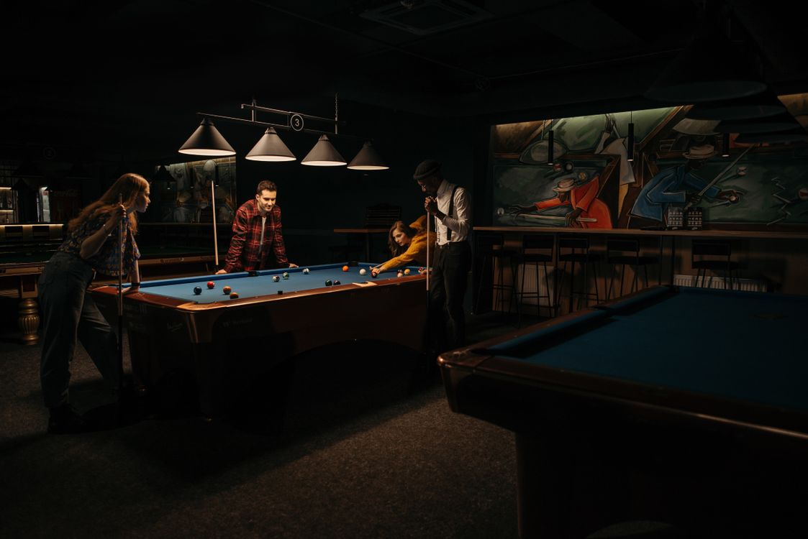

The Joint
The neighborhood bar on Broadway
Old Broadway Club is a dive bar and grill in Joplin. The beer is cheap and the cocktails are inexpensive. The pub grub is worth the trip.
Grab a stool and shoot some pool, then stay for a burger. Takeout is available too.
House Favorites
Burgers
- Fatty Patty14Double bacon cheeseburger with American cheese on Texas toast
- Venom12Bacon, pepper jack cheese, sauteed onions and jalapenos
- Broadway Burger10American cheese, lettuce, tomato, onion and pickle
Munchies
- Fried Fungi8Beer battered button mushrooms
- Philly Fries10Hand-cut fries with nacho cheese, philly fixin's and diced tomato
Burgers are served with hand-cut fries or house-made chips. See the full menu for every burger, sandwich, and cocktail.
While You Are Here
Stock photo. The bar has pool tables, a shuffleboard, and a jukebox, plus live music nights.
Games and live music

Pool
Shoot a rack with friends or join a table on the pool tables.
Shuffleboard
A barroom classic for between rounds, pairs well with a cold beer.
Jukebox
Pick the playlist. The jukebox keeps the room humming.
Live Music
Live music. Check the bar's Facebook page for who is playing this week.
Hours
Door Sign
| Tue - Sat | 11am - 11pm |
| Sun - Mon | Closed |
Kitchen open during bar hours. Call ahead for takeout: (417) 621-0601.